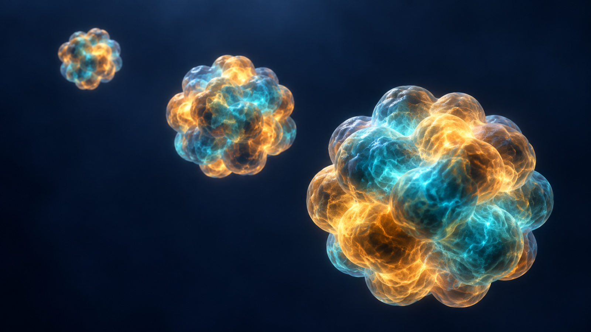
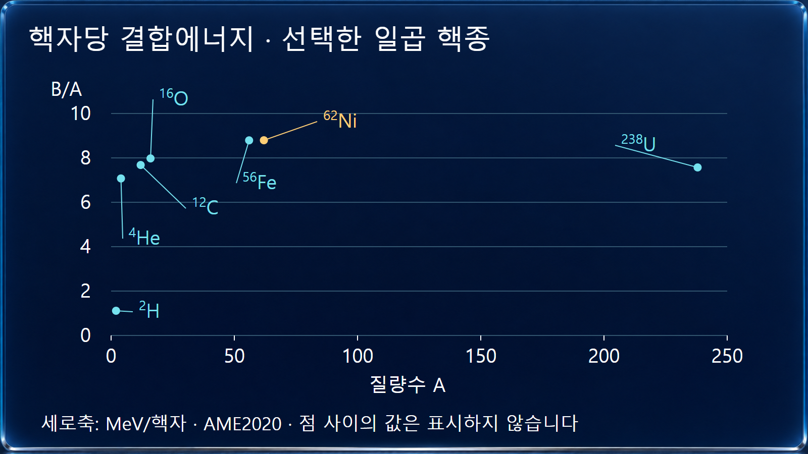
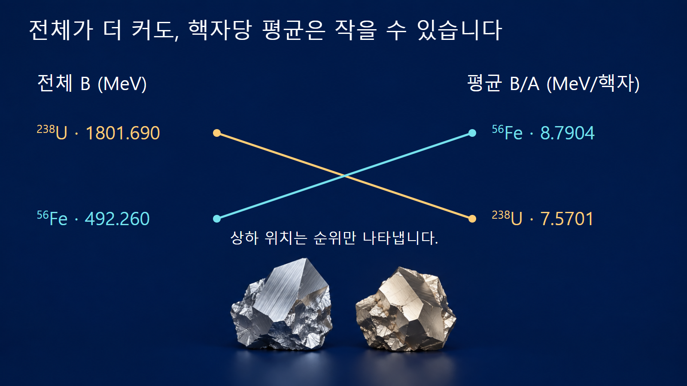

질량·에너지와 핵반응 · 024
핵자당 결합에너지
핵 전체 결합에너지를 핵자수로 나눈 평균 결합 강도

핵자당 결합에너지는 전체 결합에너지 B를 핵자수 A로 나눈 평균값입니다. 큰 핵은 핵자가 많아 전체 결합에너지도 큰 경우가 많으므로, 크기가 다른 핵을 비교할 때 B/A를 사용합니다. 이 평균은 특정 중성자 하나를 떼어 내는 에너지나 원자핵의 수명과 같은 값이 아닙니다.
전체값을 핵자수로 나누는 이유
원자핵의 전체 결합에너지는 모든 핵자를 자유 양성자와 중성자로 분리하는 데 필요한 에너지입니다. A가 다른 핵을 전체값만으로 비교하면 ‘입자가 더 많다’는 효과와 ‘핵자당 더 강하게 결합했다’는 효과가 섞입니다. 평균 결합에너지 b=B/A를 정의하면 전체값은 B=Ab로 되돌릴 수 있습니다. A는 개수이므로 무차원이고, b는 보통 MeV/핵자로 표시합니다.
원자질량평가 표의 열 이름이 BINDING ENERGY/A라면 이미 A로 나눈 값입니다. 여기에 다시 A를 나누면 평균을 두 번 낸 잘못된 결과가 됩니다. 이 글은 AME2020의 해당 열을 keV에서 MeV로 환산해 사용하며, 전자 결합에너지의 작은 차이를 무시하는 MeV 규모 비교입니다.
가벼운 핵에서 철·니켈 부근까지 어떻게 달라지는지 봅니다
선택한 핵종을 비교하면 중수소는 약 1.112 MeV/핵자, 헬륨-4는 약 7.074 MeV/핵자, 탄소-12는 약 7.680 MeV/핵자입니다. 철·니켈 부근에서는 약 8.8 MeV/핵자에 이르고, 우라늄-238은 약 7.570 MeV/핵자입니다. 모든 동위원소가 한 줄의 매끈한 곡선 위에 놓이는 것은 아닙니다. 같은 A라도 Z와 N의 조합에 따라 값이 다르고, 가벼운 영역의 껍질·짝지음 효과 등으로 국소적인 변화도 나타납니다.
그림은 AME2020에서 고른 일곱 핵종의 점을 표시합니다. 점 사이에 측정하지 않은 핵종의 값을 임의로 채우거나, 핵자가 하나씩 늘어나는 실제 반응 경로로 연결하지 않습니다. 가로축은 질량수이며 원자번호나 원자의 실제 크기가 아닙니다.

전체 결합에너지의 순위가 평균의 순위와 달라집니다
첫 번째 계산 예시는 철-56과 우라늄-238입니다. 철-56은 b≈8.7903563 MeV/핵자이므로 전체 B≈56×8.7903563=492.260 MeV입니다. 우라늄-238은 b≈7.5701262 MeV/핵자이므로 전체 B≈238×7.5701262=1801.690 MeV입니다. 우라늄의 전체값이 훨씬 크지만 핵자당 평균은 철보다 작습니다.
이 차이는 평균과 합의 차이입니다. 우라늄 원자핵 하나를 모든 자유 핵자로 분리하는 데는 철 하나보다 더 많은 에너지가 필요하지만, 그 사실만으로 우라늄이 핵자당 더 단단히 결합했다고 결론짓지 않습니다. ‘가장 결합이 강하다’는 말을 쓸 때 전체값을 말하는지 평균값을 말하는지 함께 밝혀야 합니다.

철-56을 정확한 최대값이라고 쓰지 않습니다
두 번째 계산 예시는 철-56과 니켈-62입니다. AME2020의 b 값은 각각 약 8.7903563과 8.7945555 MeV/핵자입니다. 차이는 0.0041992 MeV/핵자, 즉 약 4.20 keV/핵자로 작지만 니켈-62 쪽이 더 큽니다. 대략적인 곡선에서 ‘철 부근’이라고 부르는 것과 철-56이 정확히 최대라고 말하는 것은 다릅니다. 핵자당 결합에너지의 최대 핵종은 니켈-62로 설명합니다.
Fewell의 1995년 논문은 니켈-62와 철-58이 철-56보다 더 큰 평균 결합에너지를 갖는다는 점과, 철-56에 대한 오해의 배경을 분석했습니다. 여기서 최대라는 기준은 자유 양성자·중성자를 기준으로 한 평균 결합에너지입니다. 핵자당 질량의 최소, 우주에 많은 원소, 반감기가 긴 핵종이라는 서로 다른 기준까지 같은 순위라고 확대하지 않습니다.
| 핵종 | A | B/A (MeV/핵자) | B (MeV) |
|---|---|---|---|
| 중수소 | 2 | 1.1123 | 2.2246 |
| 헬륨-4 | 4 | 7.0739 | 28.2957 |
| 탄소-12 | 12 | 7.6801 | 92.1617 |
| 산소-16 | 16 | 7.9762 | 127.6193 |
| 철-56 | 56 | 8.7904 | 492.2600 |
| 니켈-62 | 62 | 8.7946 | 545.2624 |
| 우라늄-238 | 238 | 7.5701 | 1801.6900 |
중간 질량 영역이 높은 이유를 경쟁하는 효과로 설명합니다
핵력은 짧은 거리에서 주로 작용하므로, 핵자가 더해져도 한 핵자가 모든 다른 핵자와 똑같이 강하게 결합하지는 않습니다. 작은 핵에서는 표면에 해당하는 핵자의 비율이 커서 평균적으로 이웃과 맺는 결합이 적습니다. 크기가 커지면서 이 표면 효과의 비중이 줄어드는 경향은 평균 결합에너지가 높아지는 이유의 하나입니다.
한편 양성자가 많아질수록 전기적 반발이 전체 결합을 약하게 만드는 효과가 커집니다. 양성자와 중성자의 비율, 껍질과 짝지음도 함께 작용합니다. 이러한 경쟁 때문에 단순히 ‘핵자가 많을수록 B/A가 계속 커진다’고 예상할 수 없습니다. 액적모형은 큰 흐름을 설명하지만 니켈-62 같은 정확한 최대 위치와 미세한 차이는 실제 핵질량 자료로 확인합니다.
핵분열과 핵융합에서는 평균의 차이를 전체 에너지로 바꿉니다
반응에서 에너지가 나오는지 확인하려면 생성물과 반응물의 전체 결합에너지를 비교합니다. 각 핵의 평균값 b만 있다면 해당 핵의 A를 곱한 뒤 모두 더해야 합니다. 양성자·중성자 수가 각각 보존되는 반응에서는 Q=ΣA생성물b생성물−ΣA반응물b반응물로 검산할 수 있습니다. 핵종 여러 개의 평균값을 단순히 더하면 각 핵에 들어 있는 핵자수를 빠뜨립니다.
무거운 핵의 분열과 가벼운 핵의 융합이 에너지를 낼 수 있는 큰 방향은 이 비교로 이해합니다. 그러나 ‘철보다 가벼우면 모든 융합이 발열’ 같은 일괄 규칙으로 쓰지는 않습니다. 실제 반응의 모든 생성물, 들뜬상태와 방출입자를 지정해야 하며, 에너지적으로 유리해도 장벽과 반응단면적 때문에 실제 발생률은 낮을 수 있습니다.
평균으로는 알 수 없는 정보를 남겨 둡니다
B/A가 크다고 특정 중성자의 분리에너지가 반드시 그 값과 같지는 않습니다. 분리에너지는 이웃 핵종의 질량 차이에서 구하며 껍질과 짝지음에 민감합니다. 또한 평균 결합에너지만으로 베타붕괴 여부나 반감기를 결정할 수 없습니다. 붕괴의 최종상태 질량, 보존조건과 전이 확률이 더 필요합니다.
따라서 B/A 그래프는 핵종 간의 평균 결합 규모와 에너지 생산의 큰 방향을 읽는 지도입니다. 개별 반응의 에너지와 속도, 특정 핵자의 분리 조건을 모두 담은 설계도는 아닙니다. 그래프에서 얻은 판단을 실제 계산으로 옮길 때는 대상 핵종과 최종상태의 질량표로 돌아갑니다.